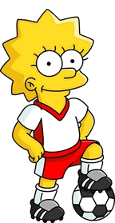

Simpson family

The Uncensored Album's canon
The first known Simpson was Sven. He married Claretta Ethridge and had two children. One of them, Rupert, married Winifred Running Goat, a Native American. They had five children, which included Trixie and Garwood. Trixie married Gaylord Stemple and they had three sons. Garwood married Clowta Stillman, and they had four offspring. Howland married Gabby Crouse and then he had five children. They were Lou, Dulcine, Hugo, Gaston and Tut. Lou married Zorina Ovadia and they had three children: Eckhardt, Bob and Twyla. Twyla married Woody Schedeen and had the daughters Fernice and Ingrid, and Eckhardt married Griselda Johnson and had two sons and two daughters named Verna, Vern, Eckhardt II, and Lotus.
Tut Simpson married "Happy" Dinsdale and they had four children, including Orville. Orville married Yuma Hickman. They had Abraham Simpson and his brothers. They moved back to the US and Abraham met Mona. They had Homer, who married Marge Bouvier (joining the Bouvier family with the Simpsons) and had Bart, Hugo (non-canon), Lisa, and Maggie. Abe also had an affair with an unknown woman, which resulted in Herb, who was adopted by the Powell family. During World War II, Abe had an affair with Edwina, which resulted in Abbie.
Homer Simpson

Homer Jay Simpson (born May 12, 1956)[36] is the main protagonist of The Simpsons series (or show). He is the spouse of Marge Simpson and father of Bart, Lisa and Maggie Simpson. Homer is overweight (said to be ~240 pounds), lazy, and often ignorant to the world around him. Although Homer has many flaws, he has shown to have great caring, love, and even bravery to those he cares about and, sometimes, even others he doesn't. He also serves as the main protagonist of the The Simpsons Movie.
Catchphrases
- “D'oh!”
―Homer when he makes a mistake. -
“Why you little...!”
―Homer strangling or trying to strangle Bart/or someone else. -
“Woo-hoo!”
―Homer when something good happens to him.
Bart Simpson

Bartholomew "Bart" Jojo Simpson (born April 1[7] or February 23[8]) is the mischievous, rebellious, misunderstood, disruptive and "potentially dangerous" oldest child of the Simpson family in The Simpsons. He is the only son of Homer and Marge Simpson, and the older brother of Lisa and Maggie. He also has been nicknamed "Cosmo", after discovering a comet in "Bart's Comet". Bart has also been on the cover on numerous comics, such as "Critical Hit", "Simpsons Treasure Trove #11", and "Winter Wingding". Bart also has a 100-issue comic series entitled the Simpson Comics Presents Bart Simpson. Bart is loosely based on Matt Groening and his older brother, Mark Groening.
Catchphrases
- “Ay Caramba!”
―Bart's catchphrase and first words -
“Eat my shorts!”
―Bart's second catchphrase -
“I didn't do it!”
―Bart's earlier catchphrase
Lisa Simpson
Lisa Marie Simpson (born May 9) s the elder daughter and middle child of the Simpson family and one of the two tritagonists (along with Marge,) of The Simpsons series.
Catchphrases
- “Bart!”
―Lisa's first word -
“If anyone wants me, I'll be in my room.”
―Lisa's "catchphrase" -
“Quit it, Bart!”
―Lisa's catchphrase